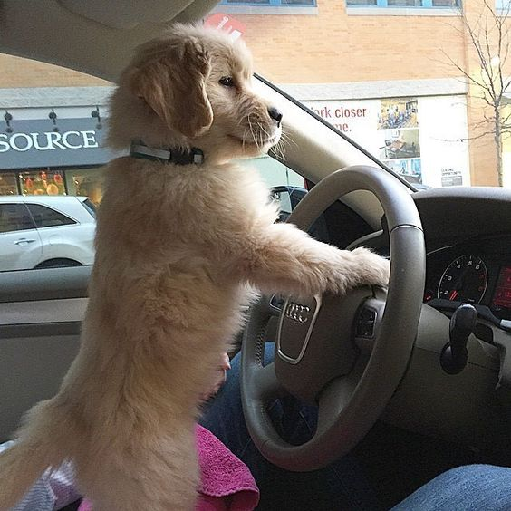

Golden Retriever
O que são?
Conhecidos por sua personalidade afável, inteligência excepcional e pelagem dourada deslumbrante, os Golden Retrievers são uma das raças mais amadas e populares em todo o mundo. Originários da Grã-Bretanha, esses cães carinhosos são reconhecidos por sua lealdade inabalável, habilidades como cães de trabalho e companheirismo incomparável. Explore conosco e descubra mais sobre esses adoráveis companheiros caninos que conquistam corações com sua natureza gentil e amigável.
Como é seu comportamento?
Os Golden Retrievers são conhecidos por serem uma das raças de cães mais amigáveis, gentis e leais. Eles têm uma personalidade que os torna excelentes companheiros para famílias, crianças e até mesmo outros animais de estimação. Aqui estão algumas características comuns do comportamento dos Golden Retrievers:
- Amigáveis e Alegres:
- Os Golden Retrievers são conhecidos por seu temperamento amigável e alegre. Eles geralmente adoram estar perto de pessoas e desfrutam da companhia de sua família.
- Sociáveis:
- Eles geralmente se dão bem com outros cães e animais de estimação, bem como com estranhos. Isso os torna cães excelentes para ambientes sociais, como parques para cães e eventos.
- Inteligentes e Treináveis:
- São inteligentes e geralmente respondem bem ao treinamento. Eles são conhecidos por sua capacidade de aprender rapidamente e por sua vontade de agradar seus proprietários.
- Ativos e Energeticos:
- Os Golden Retrievers são uma raça atlética e precisam de bastante exercício para se manterem saudáveis e felizes. Eles adoram correr, brincar e participar de atividades ao ar livre com seus proprietários.
- Afeição e Lealdade:
- Além disso, são extremamente leais e carinhosos com suas famílias. Eles muitas vezes formam fortes vínculos emocionais com seus proprietários e desfrutam de tempo de qualidade junto a eles.
- Tendência a roer e mastigar:
- Como filhotes e até mesmo em alguns casos na fase adulta, os Golden Retrievers podem ter uma tendência a roer e mastigar objetos ao redor da casa. Isso pode ser controlado com treinamento adequado e fornecendo brinquedos e objetos adequados para mastigar.
Em resumo, os Golden Retrievers são cães maravilhosos, conhecidos por sua natureza amorosa, gentil e leal. Eles prosperam em ambientes familiares e são uma escolha popular para quem procura um companheiro fiel e amoroso.
Como eu cuido de um?

Cuidar de um Golden Retriever envolve uma série de responsabilidades para garantir que ele tenha uma vida feliz, saudável e equilibrada. Aqui estão algumas dicas sobre como cuidar dessa raça tão adorável:
- Alimentação balanceada:
-
Forneça uma dieta equilibrada e nutritiva, adequada para a idade, tamanho e nível de atividade do seu Golden Retriever. Consulte um veterinário para obter recomendações específicas sobre a quantidade e o tipo de alimento.
- Exercício regular:
-
Os Golden Retrievers são cães ativos que precisam de exercícios diários para manter sua saúde física e mental. Caminhadas, corridas e brincadeiras ao ar livre são ótimas maneiras de mantê-los ativos e felizes.
- Treinamento e socialização:
-
Comece o treinamento desde cedo para ensinar comandos básicos, boas maneiras e habilidades sociais. Socialize seu Golden Retriever com pessoas, outros animais e diferentes ambientes para ajudá-lo a se tornar um cão bem ajustado.
- Higiene regular:
-
Escove o pelo do seu Golden Retriever regularmente para manter sua pelagem brilhante e livre de emaranhados. Banhos periódicos também são importantes, mas evite fazê-los com muita frequência para não ressecar a pele do cão.
- Cuidados com a saúde:
-
Mantenha as vacinas atualizadas e leve seu cão ao veterinário regularmente para check-ups de saúde. Esteja atento a quaisquer sinais de problemas de saúde, como mudanças no apetite, comportamento ou sintomas físicos, e procure assistência veterinária imediatamente, se necessário.
- Ambiente seguro:
-
Certifique-se de que sua casa seja segura para o seu Golden Retriever, removendo objetos pequenos que possam ser engolidos, substâncias tóxicas, e mantendo produtos perigosos fora do alcance.
- Tempo de qualidade:
-
Dedique tempo suficiente para interagir e brincar com seu Golden Retriever todos os dias. Eles são cães muito amorosos e se beneficiam muito da atenção e do carinho de seus donos.
- Estimulação mental:
-
Forneça brinquedos e atividades que estimulem a mente do seu Golden Retriever, como jogos de busca, brinquedos interativos e treinamento de truques. Isso ajuda a manter seu cão mentalmente alerta e feliz.
Seguindo essas diretrizes básicas de cuidados, você estará no caminho certo para oferecer ao seu Golden Retriever uma vida saudável, feliz e gratificante. Lembre-se sempre de que cada cão é único, então observe as necessidades individuais do seu animal de estimação e ajuste seus cuidados conforme necessário.
Autores